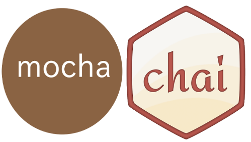

The Test Process
A Short recap
Testing systems that grows in size
Mocks - a short recap

Testing systems that grows in size
Mocks - a short recap
- Mock objects are simulated objects that mimic the behavior of real objects in controlled ways.
- Mock objects have the same interface as the real objects they mimic, allowing a client object to remain unaware of whether it is using a real object or a mock object.
- Many available mock object frameworks allow the programmers to create mocks Automatically from existing code/interfaces
Mocking
For the coming days we will have great focus on Mocking and tools that helps us with doing just that
Testing
What have we used up until now
For the first two semesters, and the start of this semester, we unit-tested with JUnit since it's the most popular Unit Test Framework for Java.
It was easy to get started because JUnit includes it "all"
- A Test Runner
- A visual GUI
- A console
- The necessary assertions
Testing this Semester
This semester we will, as a minimum
Using an example you hopefully know (just as an example)
Selecting a Unit Testing Framework
Before we can start to test. we need to decide for a Testing Framework
- We will use the Mocha Testing Framework 
- It very popular
- It's supported "out of the box" by a WebStorm Configuration
Testing with Mocha and Chai
Mocha is a feature-rich JavaScript test framework running on Node.js and the browser, making asynchronous testing simple and fun. Mocha tests run serially, allowing for flexible and accurate reporting, while mapping uncaught exceptions to the correct test case
Mocha can use any assertion library Assertions but I will use Chai in all my examples
Testing using Chai (expect)
describe('Array', function(){
before(function(){
// ...
});
describe('#indexOf()', function(){
it('should return -1 when not present', function(){
expect([1,2,3].indexOf(4)).to.be.equal(-1);
});
});
});
Behavior-Driven Development
Describe User Registration
While validating the registration info
- it should make sure the email address is valid
- it should verify the email doesn't already exist
...
While creating the user's database record
- it should save successfully in the database
...
Installing Mocha
npm of course :-)
npm install mocha -g
Mocha with WebStorm
First Mocha Test
Using Nodes built in assert module
An often confusing thing for JUNIT testers is that with Mocha the test framework and the assertion library are two different things. With Mocha we decide which one to use (flexibility). In the example below describe and it is mocha, and the assert statements comes from the initial require("assert")
var assert = require("assert"); //Use Nodes built in assertion libraty
describe('Array', function(){
describe('#indexOf()', function(){
it('should return -1 when value is not present', function(){
assert.equal(-1, [1,2,3].indexOf(5));
assert.equal(-1, [1,2,3].indexOf(0));
})
})
})
- The describe() block is used to group individual specs into a suite. At least one describe block is required
- The it() block sets up the code for a single test (spec)
- The assert module contains a series of matchers which perform the comparison
First Mocha Test
Using chai
Remember: npm install chai --save-dev
var expect = require("chai").expect;
describe('Array', function(){
describe('Verify the #indexOf()', function(){
it('should return -1 when the value is not present', function(){
expect([1,2,3].indexOf(0)).to.be.equal(-1);
expect([1,2,3].indexOf(5)).to.be.equal(-1);
expect([1,2,3].indexOf(3)).to.be.equal(2);
})
})
});
Again: Note how this test case could expand to a full requirement specification for Array Type
Mocha Features
A quick glance at the documentation
Testing Asynchronous Code 1
Using the done callback
Mocha provides a callback that lets it know when an asynchronous test is complete. By adding a callback (usually named done) to it() Mocha will know that it should wait for completion
Testing the "Make It Modular Exercise" from Learnyounode
dvar expect = require("chai").expect;
describe("Testing async behaviour", function(){
var foo = false;
before(function(done){
setTimeout(function(){
foo = true;
//done(); //Test will fail without this
}, 1000);
});
it("should pass (with done called)", function(){
expect(foo).to.equal(true);
});
});
Testing Asynchronous Code
Testing the "Make It Modular Exercise" from Learnyounode
describe('myModule', function () {
it("should find five *.js files", function (done) {
myModule(tempDir,"js",function(err,data){
if(err){
throw err;
}
//assert.equal(data.length , 2);
expect(data.length).to.be.equal(5);
done();
});
});
First Mocha + Chai example

JavaScript Mock Frameworks
Spies, Stubs and Mocks
Mocking HTTP Requests
Using nock to Mock HTTP Requests- Nock is an HTTP mocking and expectations library for Node.js
- Nock can be used to test modules that perform HTTP requests in isolation (that is without performing a real network operation)
npm install nock
var nock = require('nock');
var n = nock('http://myapp.iriscouch.com')
.get('/users/1')
.reply(200, {id: '123ABC',username: 'kurt', email: 'kurt@gmail.com'});
Mocking HTTP Requests
Example part-1 - code to be tested
Assume we had a module that encapsulated requests to a remote REST-API like: http://jokes-plaul.rhcloud.com/api/joke
Testing a module like this will be hard, since it depends on an external resource (what if net is unavailable) and return replies that will change
var request = require("request");
var URL = "http://jokes-plaul.rhcloud.com/api/joke";
function getJoke(callback) {
request(URL, function (error, response, body) {
if(error || response.statusCode >=400){
return callback(error || body );
}
callback(null,JSON.parse(body));
});
};
module.exports = {
getJoke : getJoke //....
}
Mocking HTTP Requests
Example part-2,The test code with MOCK's
Test Code for the getJoke function
var expect = require("chai").expect;
var jokes = require("../module/joke");
var nock = require("nock");
var testJoke = {"id": 1234, "joke": "ha ha ha", "reference": "unknown"};
var n = nock('http://jokes-plaul.rhcloud.com');
describe('Person API Get', function () {
before(function (done) {
n.get('/api/joke')
.reply(200,testJoke );
done();
});
it('should fetch the vampire joke', function (done) {
jokes.getJoke(function (err, joke) {
if (err) {
throw err;
}
expect(joke.reference).to.be.equal("unknown");
expect(joke).to.be.eql(testJoke);
done();
})
});
});